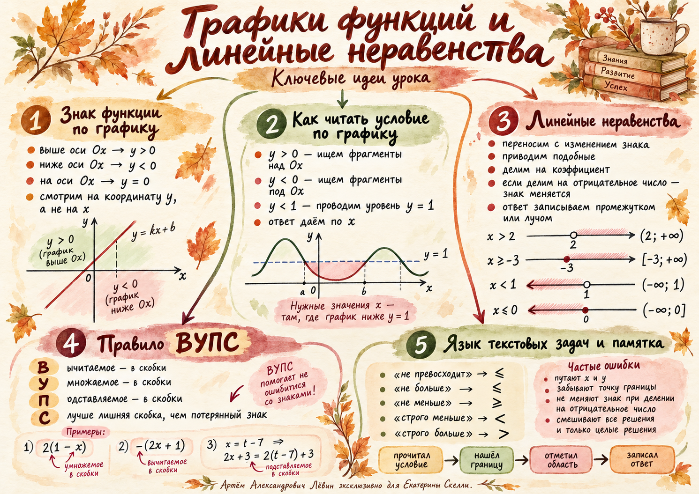

Математика / 28 октября 2026 / учебная запись
График показывает.
Неравенство уточняет.
Значение функции читаем по высоте точки, решения неравенства — по горизонтальной оси. Затем переводим условие на язык символов, аккуратно работаем со скобками и проверяем границы.
Екатерина Скелли · Лёвин Артём Александрович
Один график — несколько способов прочитать условие.
01 / График
Где функция положительна?
Значение функции при данном x — координата y соответствующей точки. Высота точки относительно оси Ox определяет знак.
Промежуток записываем по оси x, знак значения читаем по оси y.
02 / График
Сравните значение с числом.
Чтобы найти f(x) < c, проведите горизонтальный уровень y = c. Выберите фрагменты графика ниже уровня и считайте их x.
При x = 3 значение функции равно 1. Для строгого неравенства этот x не подходит.
03 / Перевод
Условие читаем точно.
| Формулировка | Знак |
|---|---|
| меньше; ниже | < |
| не больше; не превосходит | ≤ |
| больше; выше | > |
| не меньше; не менее | ≥ |
«f(x) = −x + 14 не превосходит 2» означает −x + 14 ≤ 2. После переноса и деления на −1 получаем x ≥ 12.
04 / Преобразования
Скобки сохраняют смысл.
Правило урока — «ВУПС»: вычитаемое, умножаемое, подставляемое берём в скобки, когда это целое выражение.
Дробное неравенство
После умножения на положительный знаменатель 4:
Получаем 15 < 12x, то есть x > 5/4. У вычитаемого (2x + 1) после раскрытия меняются знаки обоих слагаемых.
05 / Множества
Ответ — пересечение.
Строгим знакам соответствуют выколотые граничные точки. Нестрогим — включённые. Если условие задаёт дополнительный промежуток, оставляем только общие значения.
Среди всех решений x < 2 оставляем значения из [−7; 12]. Получаем [−7; 2).
Если нужны только целые решения, перечисляем −7, −6, −5, −4, −3, −2, −1, 0, 1. Множество всех действительных решений значительно шире.
06 / Моделирование
Слова превращаем в ограничения.
Перевод с комиссией
Переводим p рублей. Комиссия — 12 рублей и 4% суммы перевода. Бюджет вместе с комиссией — не более 900 рублей.
1,04p ≤ 888, поэтому p ≤ 11100/13. Наибольшая целая сумма перевода — 853 рубля. Процент берётся от p.
Три последовательных чётных числа
Числа x, x + 2 и x + 4. Их сумма не больше 164, значит 3x + 6 ≤ 164 и x ≤ 158/3. Наибольшее чётное натуральное x равно 52. Числа: 52, 54, 56.
07 / Проверка
Переменная исчезла — что дальше?
Параметр a считается фиксированным числом. Его значение определяет, верно ли оставшееся числовое неравенство.
08 / Путь А
10 заданий. От графика к модели.
Выполняйте задания по порядку. Отмечайте выполненные; ответы раскрывайте после собственного решения.
01 · Знак по графику
По графику определите, когда f(x) > 0, f(x) = 0 и f(x) < 0.
02 · Уровень на графике
По графику определите все x, при которых f(x) ≤ 1. Используйте графический способ.
03 · Прямая
Решите 2x + 6 ≤ 0. Изобразите ответ на числовой прямой.
04 · «Не превосходит»
При каких x функция f(x) = −x + 14 не превосходит числа 2? Запишите неравенство и решите его.
05 · Скобки и дроби
Решите 3(2 − x)/5 + 10/5 < 7x/5 − (x + 2)/5. При умножении на знаменатель сохраняйте скобки.
06 · Пересечение
Решите 3(2x + 1) − 5 < 16. Найдите решения из [−4; 7], затем перечислите целые решения.
07 · Комиссия
Комиссия за перевод — 10 руб. и 5% переводимой суммы. Бюджет вместе с комиссией — 1000 руб. Найдите наибольшую целую сумму перевода.
08 · Чётные числа
Сумма трёх последовательных натуральных чётных чисел не больше 208. Найдите наибольшую тройку.
09 · Особые случаи
Найдите множества решений: а) 5x − 3 > 5x + 1; б) 7x + 2 ≤ 7x + 3; в) 2x + 1 < 4x + 5.
10 · Параметр
Для 3y + 2a ≤ 3y + 8 найдите значения параметра a, при которых подходят все действительные y, и значения, при которых решений нет.
09 / Сверка
Проверка без спешки.
Откройте соответствующий пункт после самостоятельного решения.
01 · Знаки
f(x) > 0 при x < 2; f(x) = 0 при x = 2; f(x) < 0 при x > 2.
02 · Уровень
x ≥ 2.
03 · Прямая
x ≤ −3.
04 · «Не превосходит»
x ≥ 12.
05 · Скобки
x > 2.
06 · Пересечение
[−4; 3), целые решения: −4, −3, −2, −1, 0, 1, 2.
07 · Комиссия
942 рубля.
08 · Чётные числа
66, 68, 70.
09 · Особые случаи
а) пустое множество; б) все действительные x; в) x > −2.
10 · Параметр
При a ≤ 4 — все действительные y; при a > 4 — решений нет.
Дополнительно
Карта идей урока.

